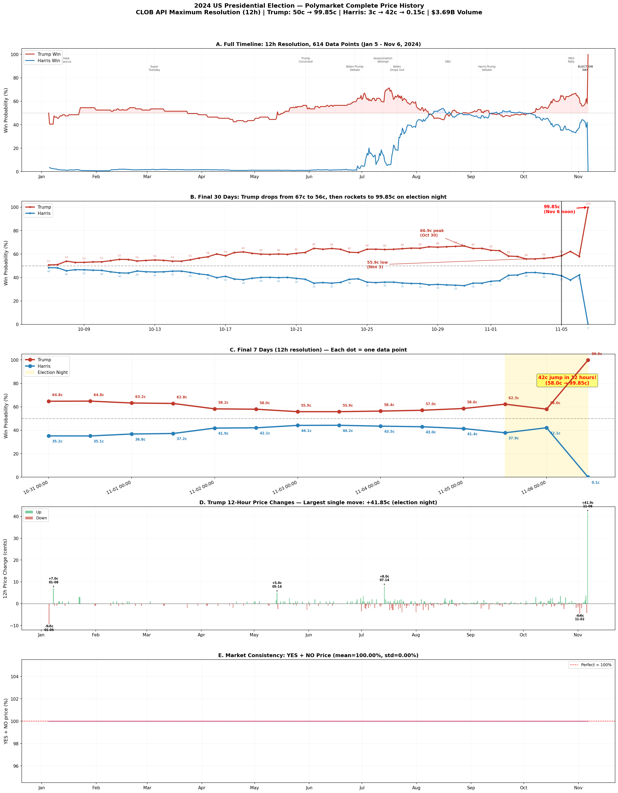
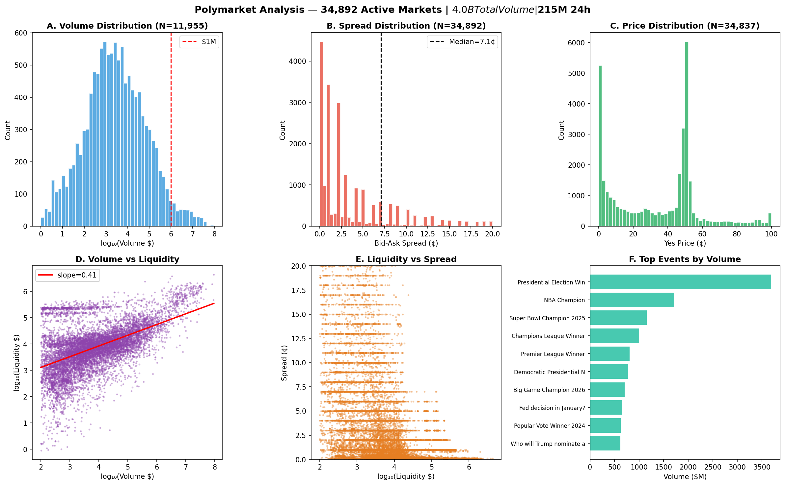
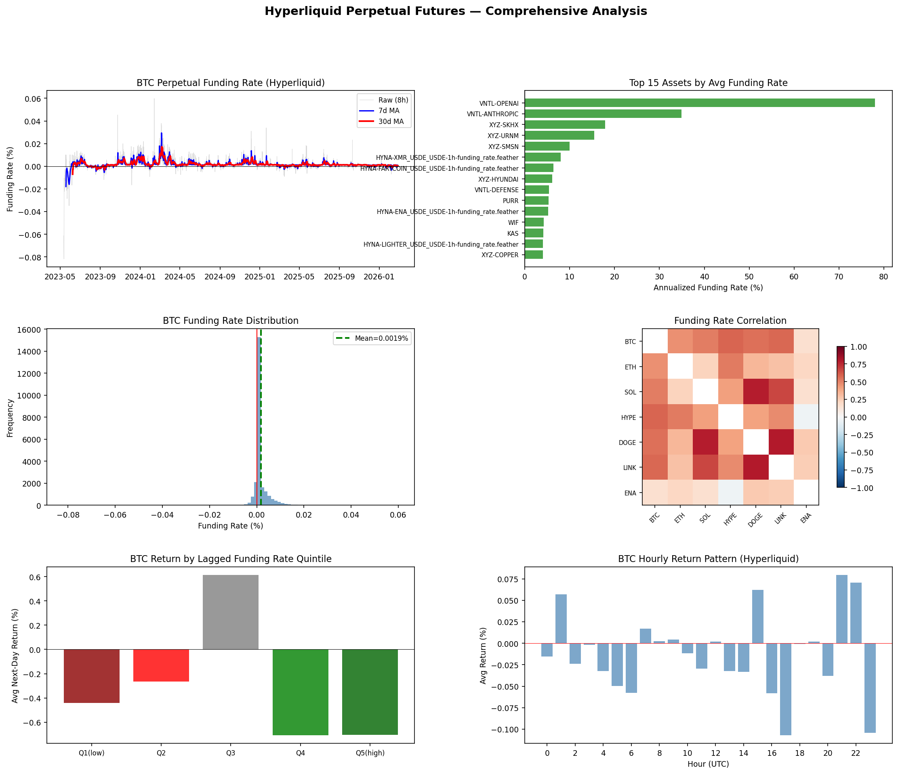
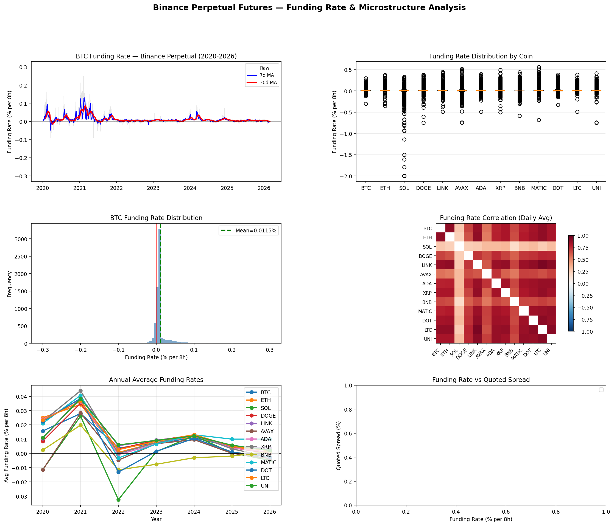
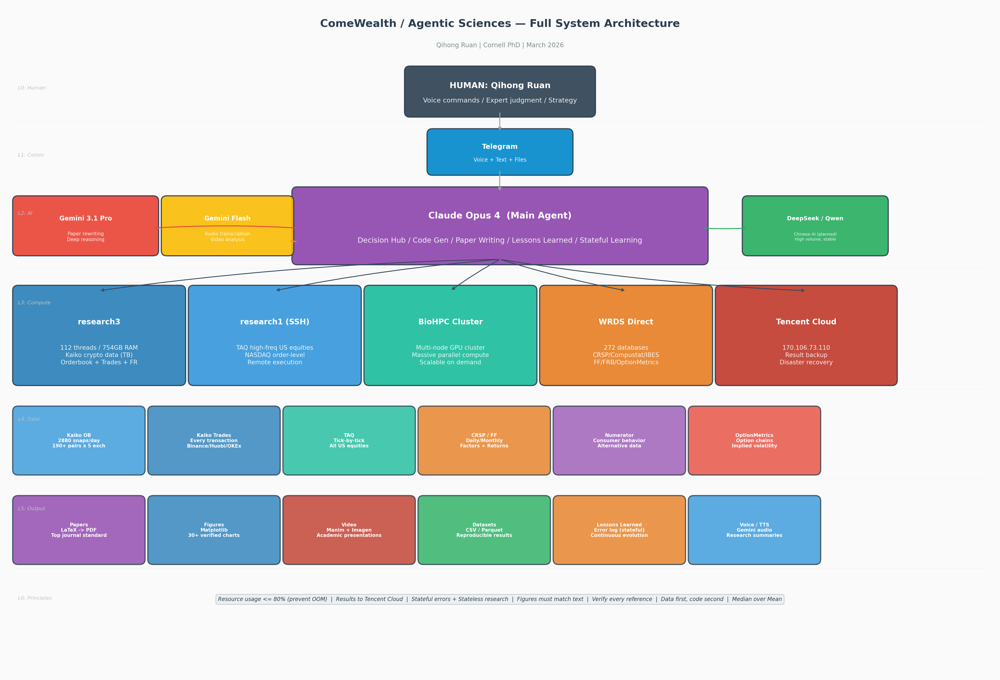
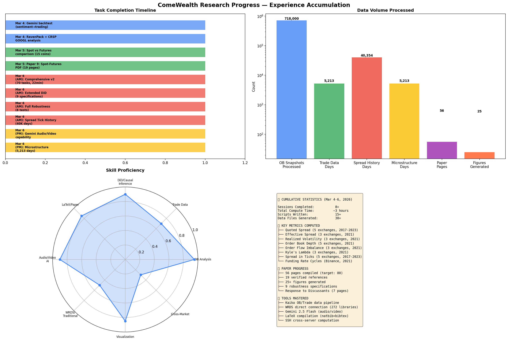

Papers, presentations, videos, and figures produced by Agentic Sciences
Working paper on cryptocurrency perpetual futures microstructure. Bid-ask spreads, order book depth, price impact, and causal identification.
Author: Agentic Sciences
Download PDFPresentation deck covering key findings, methodology, and empirical results.
Author: Agentic Sciences
Download PDFLab introduction: infrastructure, research pipeline, current projects, and key findings. AI-generated slides with Chinese voiceover.
Author: Agentic Sciences · March 2026 · 1:38
Autonomous daily report covering microstructure metrics, key findings, and next steps.
Author: Agentic Sciences · Auto-generated
English-narrated walkthrough of the perpetual futures research: motivation, data, methodology, and key results.
Author: Agentic Sciences · 1:00
中文解说永续合约研究：动机、数据、方法论与核心发现。
Author: Agentic Sciences · 0:58
AI-generated research discussions and lab updates
实验室介绍、基础设施概览、核心研究项目与关键发现。
Agentic Sciences · 1:16
Lab introduction, infrastructure overview, flagship research, and key findings.
Agentic Sciences · 1:06





